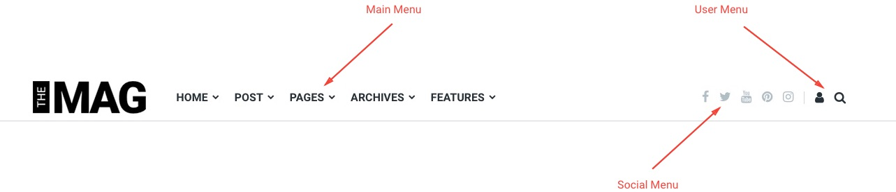
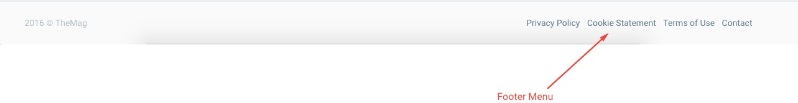
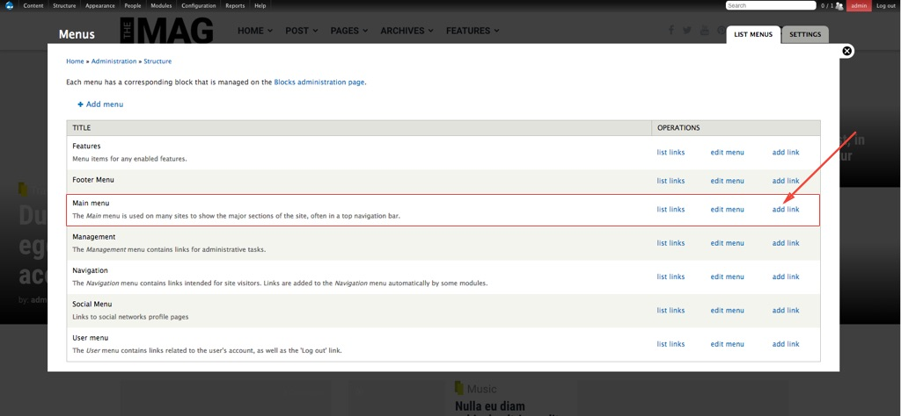
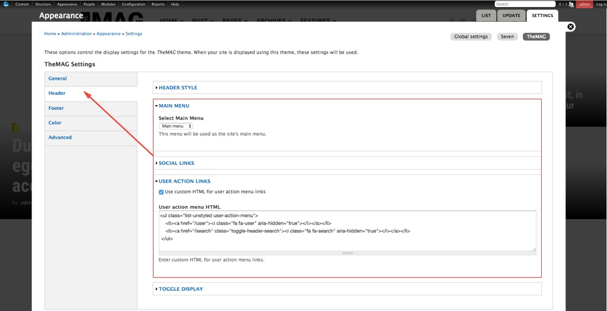

Menus
Friday, March 17, 2017 12:44 PMTheMAG contains four menu regions.
- Main Menu – This menu supports multilevel submenus.
- Social Menu – Menu with links to social networks
- User Menu – Menu that contains links related to user action (Login, Search, etc.)
- Footer Menu


Adding a new link to the menu:
Step 1: Go to Structure > Menu
Step 2: Click on add link on the menu where you want to add a new link

Step 3: Enter Menu link title and a path for the link. In addition to text, the menu link title field also supports HTML.
For an example, if you wish to use Font Awesome in order to create a link with an icon and text, you can do the following:
<i class="fa fa-user" aria-hidden="true"></i> User Account
Step 4: The main menu supports several levels of submenus. If you wish to position the link in a submenu, use the Parent link drop-down list to choose link depth. When you add links to the main menu, always use the option Show as expanded to enable access to the deeper layers of the menu in the responsive navigation.
Step 5:. In the end, click Save
Theme Settings
This theme contains advanced settings through which you can easily make a change of the menus
Step 1: Go to Appearance > Settings > TheMAG
Step 2: Click on the tab Header if you wish to make changes to the menus contained by the header, or click on the tab Footer if you wish to change the footer menu. Unlike the "Main Menu" and "Footer Menu", in the "Social Links" and "User Action Links menu" you can also use custom HTML to create links in the menu.

Step 3: To save changes, click on Save configuration.